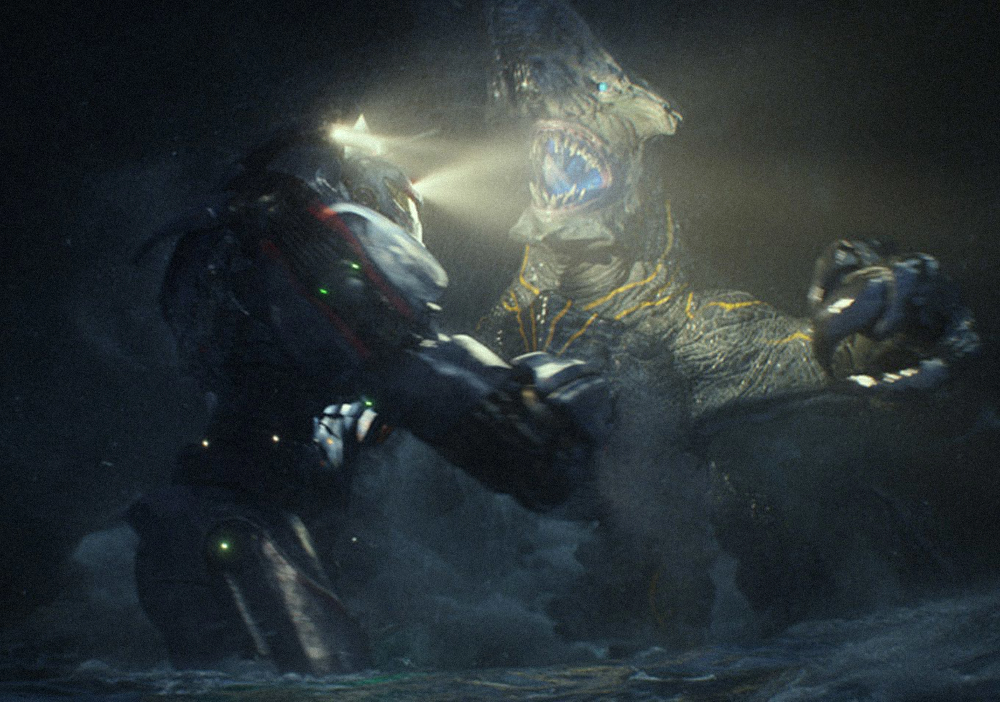
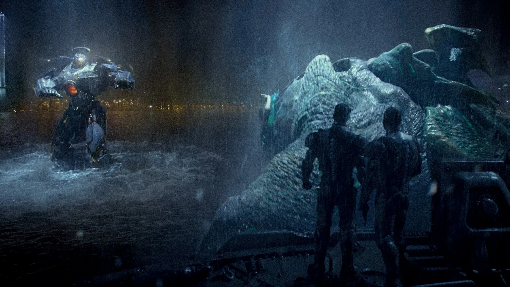
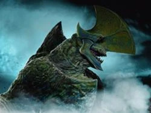
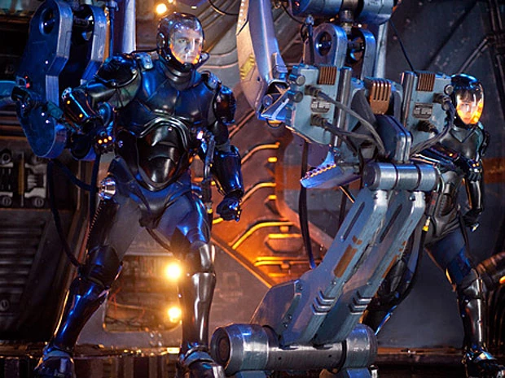

¿Qué es un titán?
En el universo de la película, los "titanes" son criaturas gigantescas conocidas como Kaiju, seres colosales que emergen desde una grieta interdimensional en el fondo del océano Pacífico. Para enfrentarlos, la humanidad construye Jaegers, robots igual de enormes controlados por dos pilotos conectados mentalmente mediante una tecnología llamada "deriva neural". Cada batalla entre un Jaeger y un Kaiju se convierte en un enfrentamiento titánico que pone a prueba tanto la fuerza de las máquinas como la sincronía de quienes las pilotan.
Galería




Peleas destacadas
| Jaeger | Kaiju | Ubicación |
|---|---|---|
| Gipsy Danger | Knifehead | Alaska |
| Gipsy Danger y Striker Eureka | Otachi y Leatherback | Hong Kong |
| Gipsy Danger | Slattern | La Brecha, fondo del océano |
Mi reseña personal
Titanes del Pacífico fue una de las primeras películas que miré en mi vida; desde pequeño me fascinaban los robots o las peleas en general, entonces de ahí mi fanatismo por la misma. Me causó una gran impresión el cómo aprovechaban los ángulos para hacer ver muy reales a los jaegers y eso fue lo que me cautivó. Además, el elenco tenía mucha personalidad, agregando que la trama seguía una corriente muy buena y precisa. Incluye mucho desarrollo de personaje porque a lo largo de todo el cortometraje podemos ver cómo el protagonista puede superar el trauma que le dejó la muerte de su hermano y poder vengar al mismo.